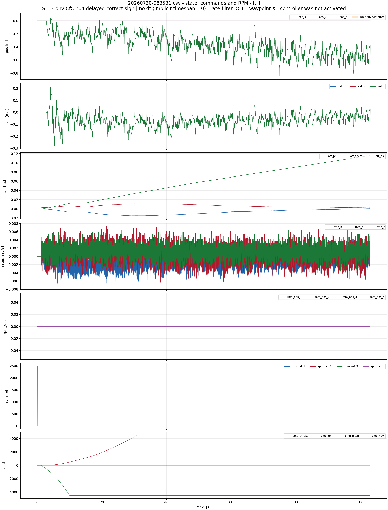
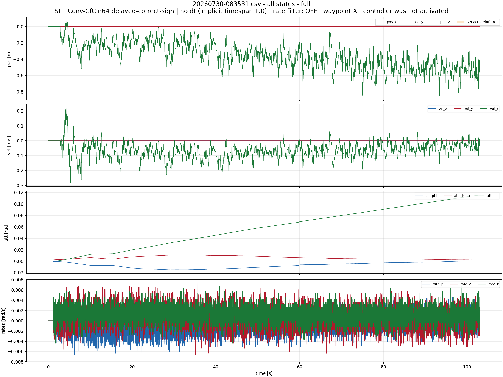
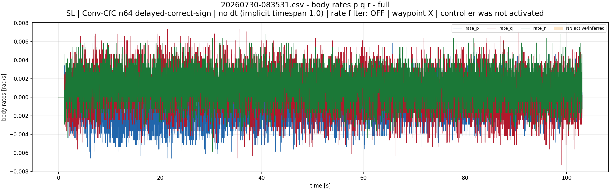
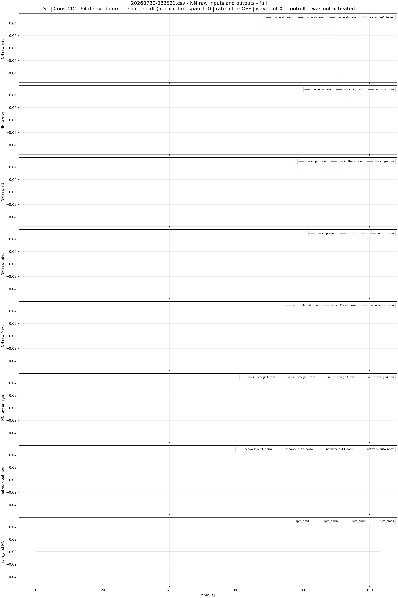
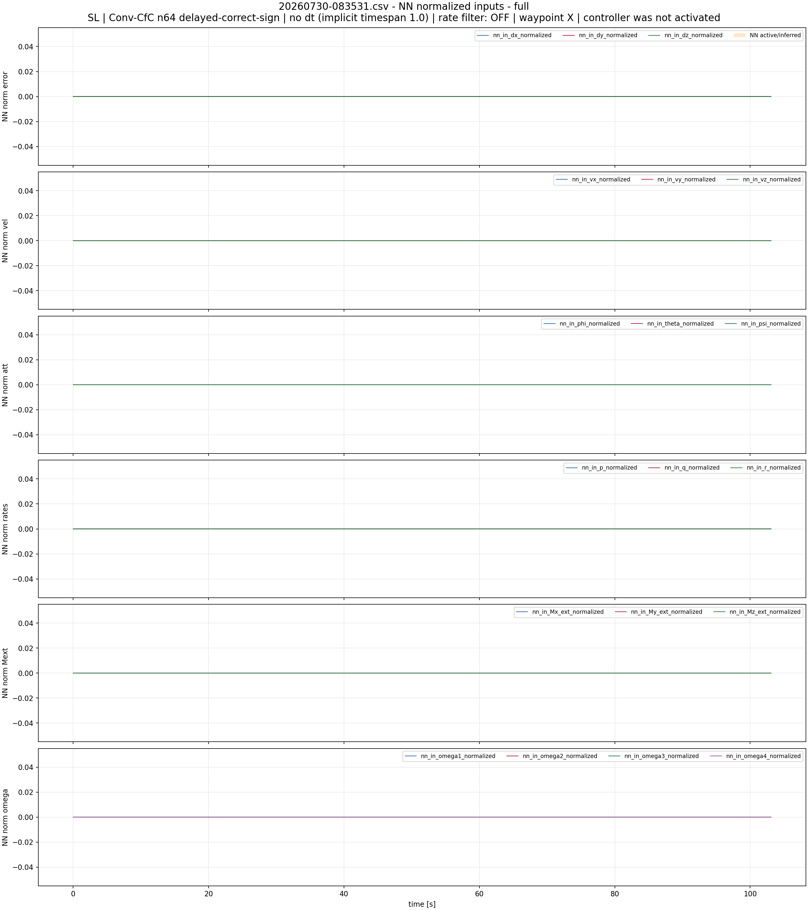
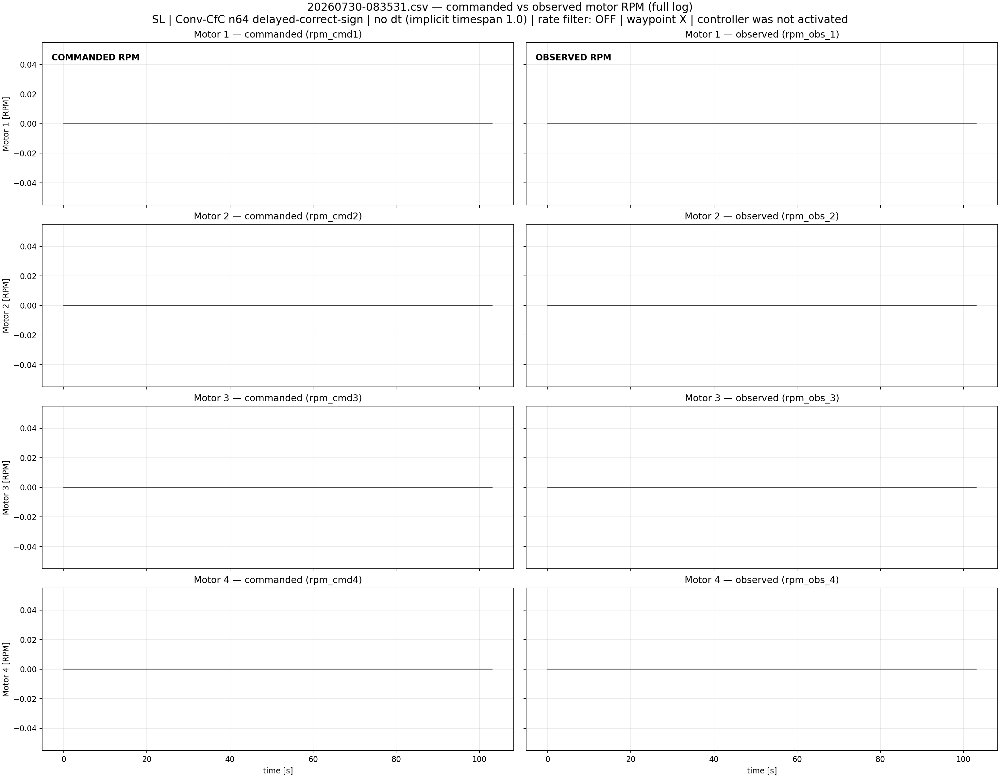

SL | Conv-CfC n64 delayed-correct-sign | no dt (implicit timespan 1.0) | rate filter: OFF | waypoint X | controller was not activated
Orange bands mark NN activity. For old logs without nn_enabled, activity is inferred from nn_in_*, network_out*, and rpm_cmd* becoming non-zero.
NN intervals shown: none





